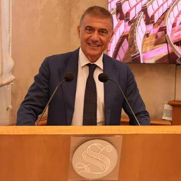
Alfonso Pecoraro Scanio
Promotore della rete EcoDigital
Ha avviato la rete nel 2021 e da allora è sulle locandine di tutte le tappe, da Roma a Quartu Sant'Elena. Presiede la Fondazione UniVerde ed è stato ministro dell'Ambiente e dell'Agricoltura.
La sua pagina
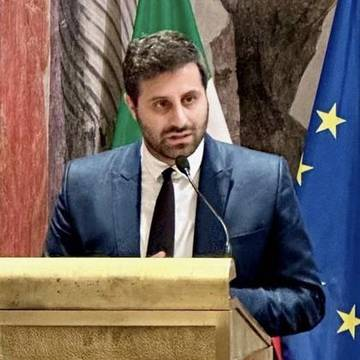
Anselmo Pellizzi
Segretario nazionale della rete
Cura il blocco pitch e best practice degli incontri. Roma il 4 dicembre 2024, gli appuntamenti di luglio 2025, la Rome Future Week del 16 settembre 2025 e il Forum del 22 luglio 2026.
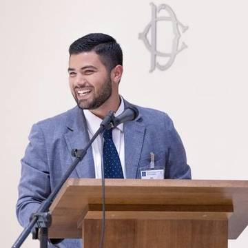
Christian Cutino
EcoDigital Campania, direttivo
Si occupa di digital marketing e coordina il gruppo campano, quello che si muove di più: 13 tappe dal 2023, da Napoli a Vietri sul Mare. Era fra i relatori di Castellammare di Stabia il 18 maggio 2024 e modera quasi tutti gli incontri in Campania.
EcoDigital Campania
Emilia Di Girolamo
EcoDigital Campania, MAVV
Dirige il Museo dell'arte, del vino e della vite di Portici e segue il pezzo enogastronomico del gruppo campano. Sul palco a Napoli, a Cercola, a Santa Maria Capua Vetere e alla Fabbrica Italiana dell'Innovazione.
EcoDigital Campania
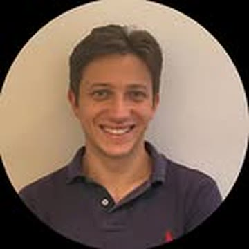
Ettore Iorio
Etica dell'intelligenza artificiale
Studia l'etica dell'intelligenza artificiale e le regole che servono a chi la usa. Ha parlato all'EcoDigital Forum di Roma del 22 luglio 2026.
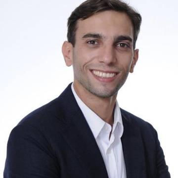
Manuel Urzì
EcoDigital Lombardia, Startup Geeks
Lavora in Startup Geeks e segue il gruppo lombardo. Sei tappe della rete, da Milano a Bologna, con i passaggi di Catania e Genova nel 2024.
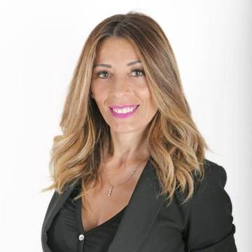
Tiziana Mossa
EcoDigital Piemonte
Consigliera della prima circoscrizione della Città di Torino. Sul palco a Milano il 22 luglio 2024 e a Torino il 27 settembre 2024, per la Giornata mondiale del turismo.
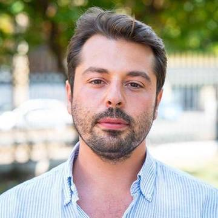
Massimiliano Califano
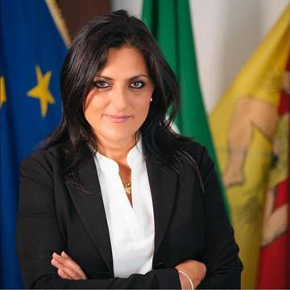
Jose Marano
Intergruppo EcoDigital all'ARS
Deputata all'Assemblea Regionale Siciliana, presiede l'Intergruppo EcoDigital nato il 13 settembre 2024 con 13 deputati di otto gruppi diversi.
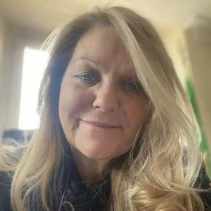
Loredana De Petris
Senatrice, promotrice della rete
Ha promosso la rete fin dall'inizio e ha aperto le sale del Senato agli incontri. Nove tappe romane, da Palazzo Brancaccio nel 2021 a Palazzo Giustiniani nel marzo 2024.
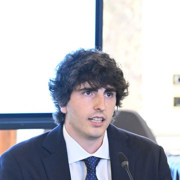
Riccardo Del Prete
Bring ValueFondatore e CEO
Bring Value è la startup che segue la rete da più tempo. Era a Roma il 4 dicembre 2024, agli incontri di luglio 2025 e all'EcoDigital Forum del 22 luglio 2026.
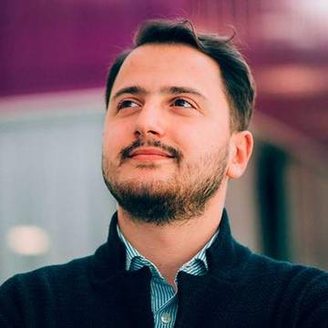
Jacopo Mele
Fondazione Homo ex MachinaPresidente
Porta agli incontri il lavoro della sua fondazione sull'innovazione e sui giovani. Quattro tappe fra Roma e Milano, dal gennaio 2023 al dicembre 2024.
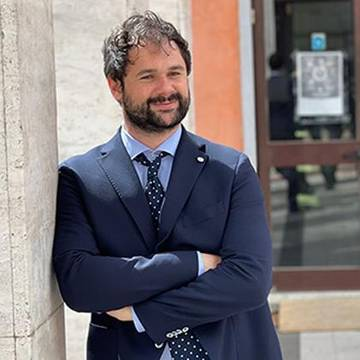
Francesco Paolo Russo
ANGIDirettore
Dirige l'Associazione Nazionale Giovani Innovatori. Tre tappe della rete, dal Phygital & Metaverse Meeting di Roma del 7 luglio 2022 in avanti.
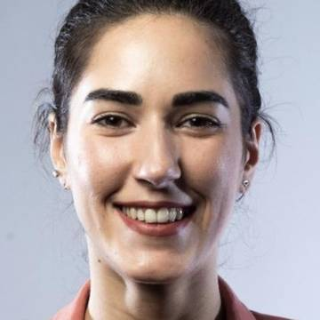
Valentina Vecchia
Idra WaterCEO
Guida Idra Water, una delle startup salite sul palco degli incontri con la propria best practice. Il marchio compare fra quelli dei materiali della rete.
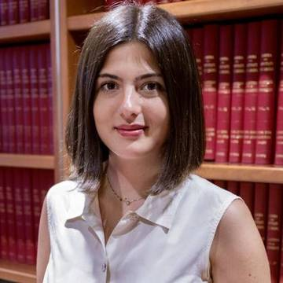
Irene Licastro
Aspire LeadersFellow
Fa parte del programma Aspire Leaders, che lavora sulla formazione dei giovani. È fra i ritratti con nome dell'archivio pubblico della rete.
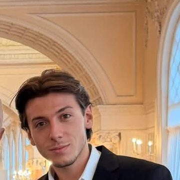
Alessandro Di Capua
Curatore del canaleResponsabile marketing e comunicazione
Cura il canale EcoDigital con Michele D'Orso: sito, social e campagne. L'11 settembre 2026 era al Lido di Venezia per il riconoscimento al video sulle Aree Marine Protette, il progetto 30x30.
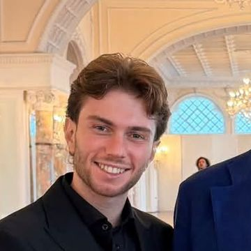
Michele D'Orso
Curatore del canaleVideo e contenuti
Ha firmato «Il Viaggio del Delfino», il video girato con l'intelligenza artificiale da Capri a Taranto. L'11 settembre 2026 il video ha ricevuto un riconoscimento alla Mostra di Venezia.